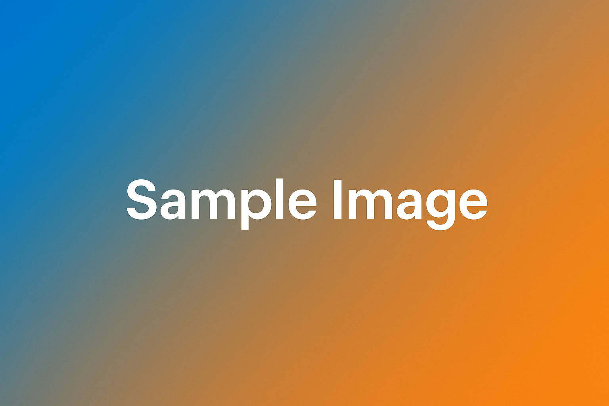

Содержимое задания
В этом примере представлены пять параграфов с различными акцентными цветами. Текст каждого параграфа выровнен по ширине для равномерных полей по краям.
Один из параграфов содержит иллюстрацию, выровненную по правому краю. Текст обтекает изображение, оставаясь выровненным по ширине.
 Этот параграф демонстрирует размещение изображения справа. Обратите внимание, что текст аккуратно обтекает картинку и сохраняет читаемость на разных ширинах экрана. Такой приём удобен для небольших иллюстраций и пиктограмм, сопровождающих основной текст.
Стили подключены из отдельного CSS-файла. Структура документа и оформление разделены, что упрощает поддержку и проверку задания.
Заключительный параграф завершает пример: все элементы выровнены по ширине, цвета различаются, а изображение в одном из параграфов аккуратно обтекается текстом.